長期トレンド
JKMとJEPXシステムプライスの推移グラフ
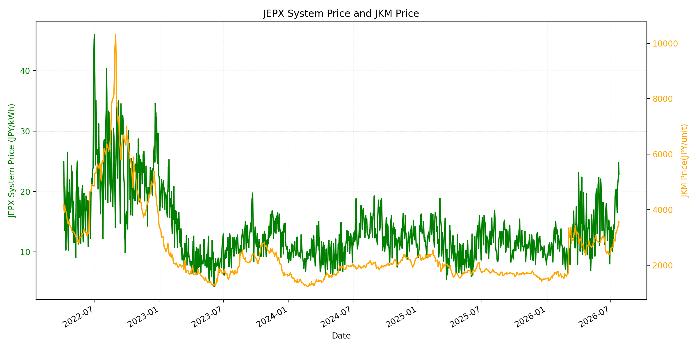
WTIの推移グラフ
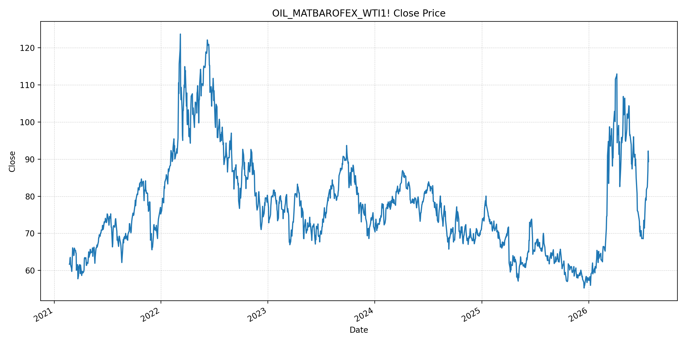
JEPXエリアプライスグラフ（直近一年分）
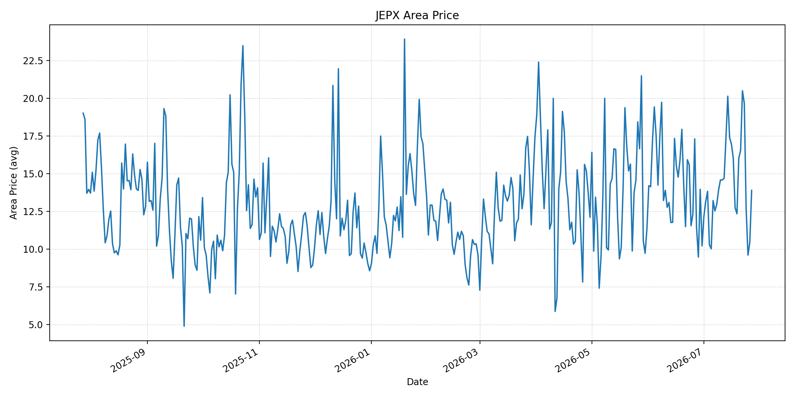
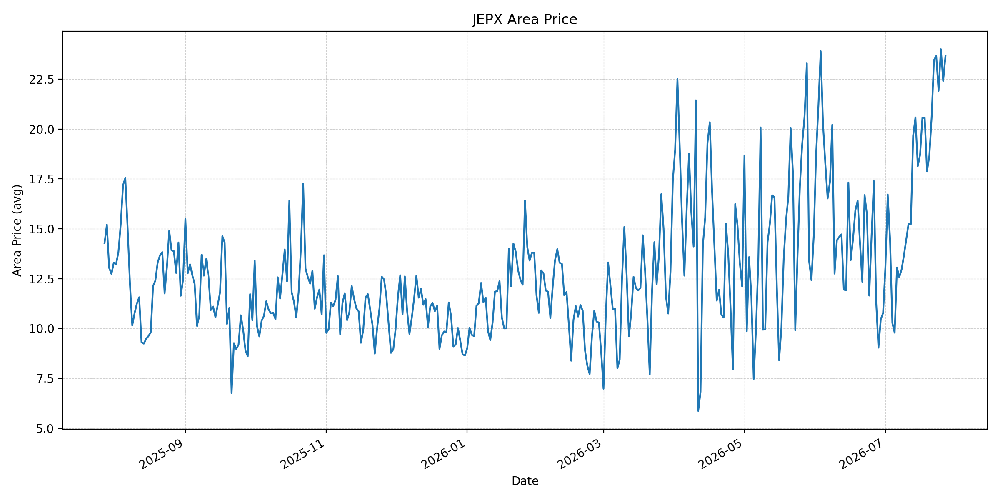
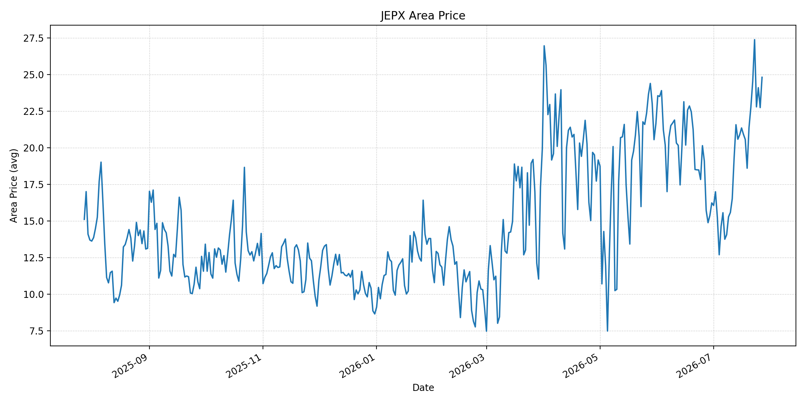
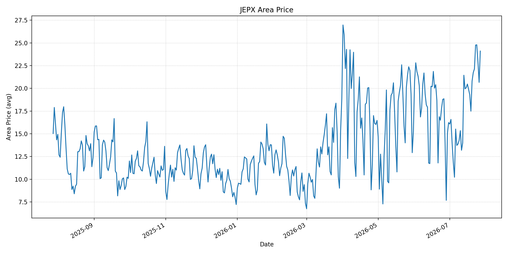
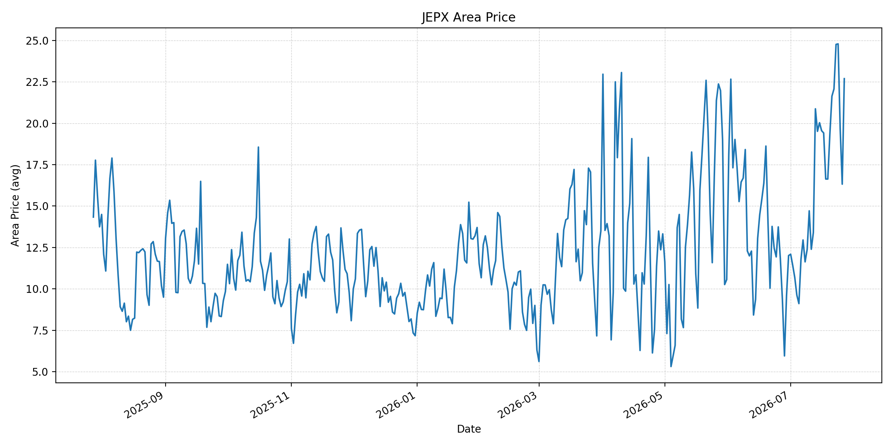
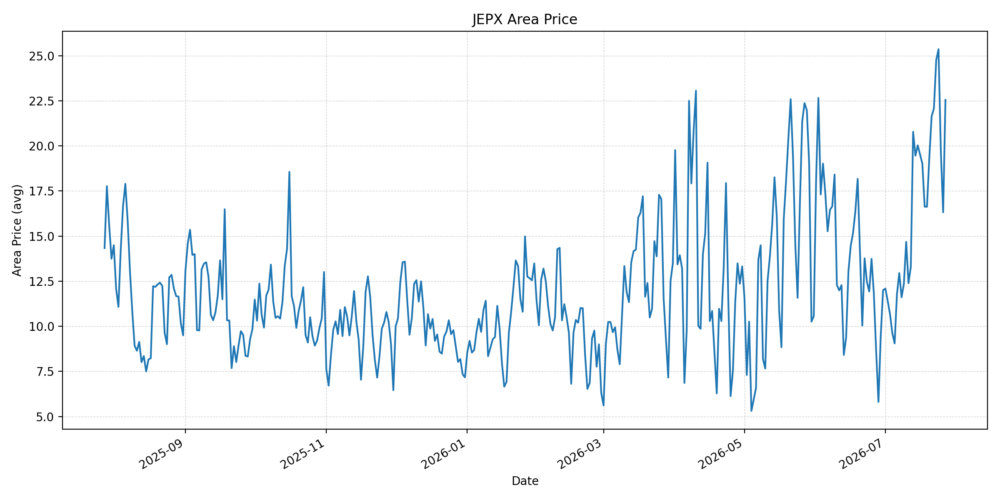
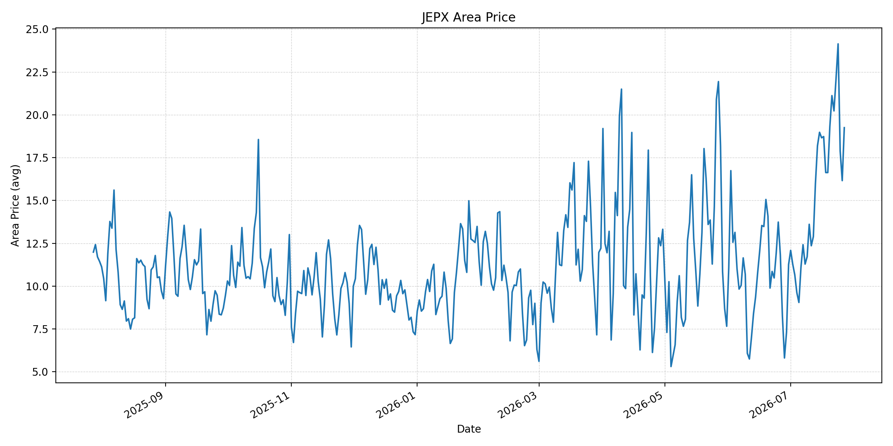
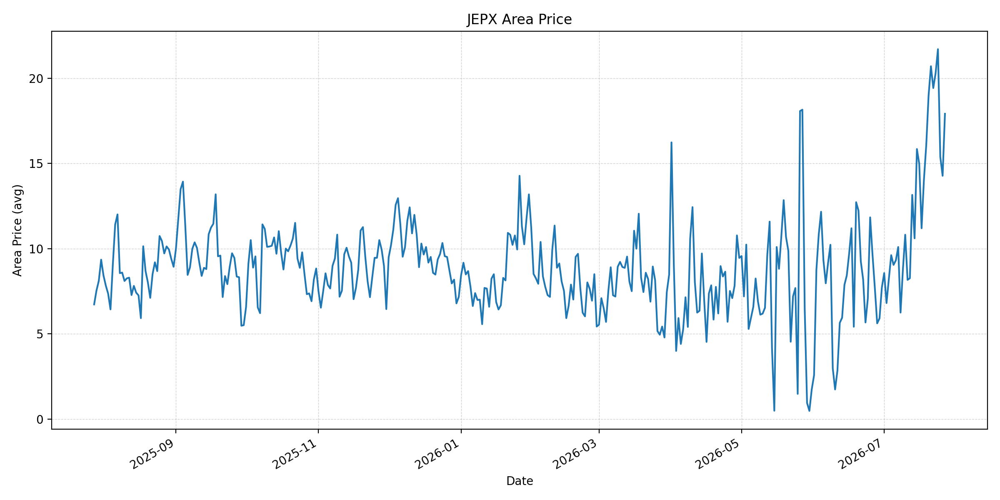
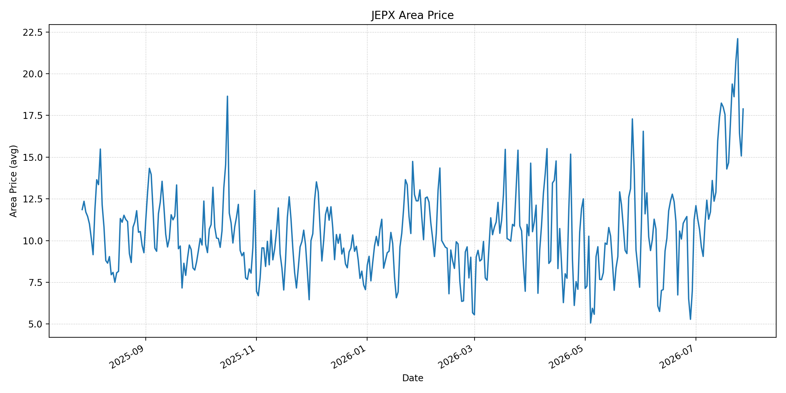
短期トレンド
JKMとJEPXシステムプライスの推移グラフ
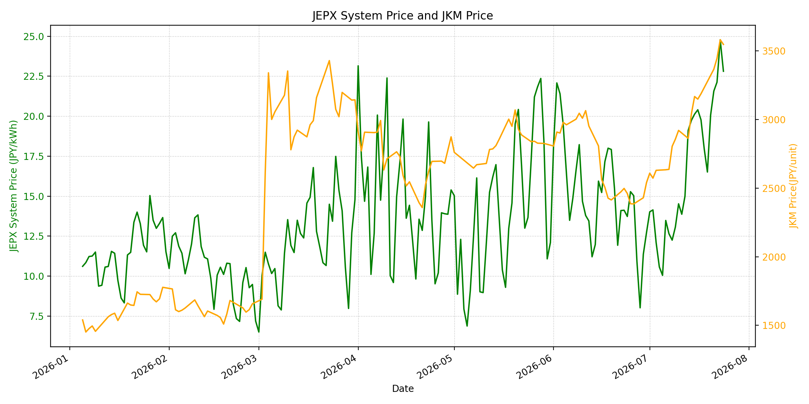
WTIの推移グラフ
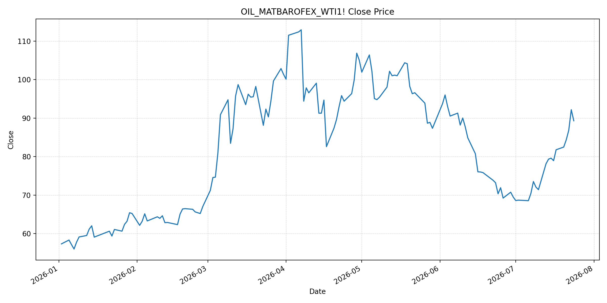
JEPXシステムプライス
JEPXは受渡日ベースの最新非空値で評価しています。最新値は 2026-07-27 分です。先週終値は 2026-07-20 時点の直近値、先月終値は 2026-06-30 時点の直近値で評価しています。
| エリア | 当日価格 | 前日価格 | 前日比（％） | 先週終値 | 先週比（％） | 先月終値 | 先月比（％） | 過去最高値 | 最高値比（％） |
|---|---|---|---|---|---|---|---|---|---|
| システム | 22.87 | 19.32 | 18.37 | 20.07 | 13.95 | 12.73 | 79.65 | 64.06 | -64.30 |
| 北海道 | 13.89 | 10.44 | 33.05 | 16.02 | -13.30 | 10.21 | 36.04 | 73.92 | -81.21 |
| 東北 | 23.66 | 22.41 | 5.58 | 18.64 | 26.93 | 10.78 | 119.48 | 84.92 | -72.14 |
| 東京 | 24.81 | 22.74 | 9.10 | 21.37 | 16.10 | 16.23 | 52.87 | 86.13 | -71.19 |
| 中部 | 24.10 | 20.66 | 16.65 | 20.80 | 15.87 | 16.23 | 48.49 | 52.06 | -53.71 |
| 北陸 | 22.69 | 16.32 | 39.03 | 19.32 | 17.44 | 12.01 | 88.93 | 46.48 | -51.19 |
| 関西 | 22.55 | 16.32 | 38.17 | 19.32 | 16.72 | 12.00 | 87.92 | 46.48 | -51.49 |
| 中国 | 19.25 | 16.16 | 19.12 | 19.32 | -0.36 | 11.26 | 70.96 | 46.48 | -58.59 |
| 四国 | 17.92 | 14.28 | 25.49 | 19.00 | -5.68 | 7.72 | 132.12 | 46.48 | -61.45 |
| 九州 | 17.89 | 15.07 | 18.71 | 17.02 | 5.11 | 11.24 | 59.16 | 40.54 | -55.87 |
LNG先物価格
最新値は 2026-07-24 の LNG(close) です。前日価格は直近非空値の 2026-07-23、先週終値は 2026-07-17 時点の直近値、先月終値は 2026-06-30 時点の直近値で評価しています。
| 当日価格 | 前日価格 | 前日比（％） | 先週終値 | 先週比（％） | 先月終値 | 先月比（％） | 過去最高値 | 最高値比（％） |
|---|---|---|---|---|---|---|---|---|
| 3548.00 | 3582.00 | -0.95 | 3188.00 | 11.29 | 2541.00 | 39.63 | 10319.00 | -65.62 |
石油先物価格
最新値は 2026-07-24 の OIL(close) です。前日価格は直近非空値の 2026-07-23、先週終値は 2026-07-17 時点の直近値、先月終値は 2026-06-30 時点の直近値で評価しています。
| 当日価格 | 前日価格 | 前日比（％） | 先週終値 | 先週比（％） | 先月終値 | 先月比（％） | 過去最高値 | 最高値比（％） |
|---|---|---|---|---|---|---|---|---|
| 89.31 | 92.19 | -3.12 | 81.78 | 9.21 | 69.50 | 28.50 | 123.70 | -27.80 |
ニュース
イラン情勢に関するニュース
- 2026年7月27日、APは、米軍が約2週間続けたイラン空爆を停止し、外交努力が再開していると報じました。一方で、米大統領は追加攻撃の可能性にも言及しており、停戦局面はなお不安定です。 参照: AP, 2026-07-27
- APは同日、米国とイランがペルシャ湾で2日連続して軍事攻撃を控えたことで、原油価格が先週の高値から反落したと報じました。ただしホルムズ海峡の通航停止や代替ルートの脆弱性は残っています。 参照: AP, 2026-07-27
ホルムズ海峡経由の石油・LNGに関するニュース
- Reutersは、米・イランの週末の攻撃停止を受けて7月27日の原油価格が約5％下落し、Brentが91.89ドル、WTIが84.64ドルになったと報じました。市場は外交余地を評価していますが、ホルムズ海峡の通航回復は遅く部分的になりやすいとされています。 参照: Reuters / MarketScreener, 2026-07-27
- Reutersは同じ記事で、週末のホルムズ海峡を通過したコモディティ船は1日10隻未満にとどまったと伝えました。価格は反落しても、LNG・原油の安全航行に対する警戒は継続しています。 参照: Reuters / MarketScreener, 2026-07-27
ホルムズ海峡経由でない石油・LNGに関するニュース
- WSJは、サウジアラビアがホルムズ海峡を避けて紅海側へ輸出を振り向ける中、バブエルマンデブ海峡への依存が高まっていると報じました。フーシ派の攻撃で、この迂回路もコストと輸送日数の上昇要因になっています。 参照: WSJ, 2026-07-27
- Reutersは、バブエルマンデブ海峡の船舶交通も7月26日に低下したと報じました。ホルムズ以外の供給ルートは機能していますが、紅海側の安全性も燃料プレミアムを左右する状況です。 参照: Reuters / MarketScreener, 2026-07-27
日本国内のイラン戦争に関係するニュース
- 過去24時間で、JEPX制度、国内電力需給ルール、または日本政府のイラン戦争関連対策を直接変更する主要な新規公表は確認できませんでした。
- 関連する国内材料として、JOGMECは7月21日のLNG市況更新で、ホルムズ海峡周辺の混乱と米・イラン緊張の再拡大により、北東アジアJKMが7月17日に高い20ドル台/MMBtuへ上昇したと整理しています。METIは6月16日の会見で、原油調達と備蓄活用により2027年度中の安定供給を見込む一方、国際エネルギー市場を緊張感を持って注視すると述べています。 参照: JOGMEC, 2026-07-21 / METI, 2026-06-16
インサイト
ニュース事項による日本の電力市場への影響（短期：数日〜1週間）
- JEPXシステムプライスは 22.87 円/kWhで前日比 18.37%、先週比 13.95%、先月比 79.65% です。原油は週明けに反落しましたが、東京 24.81 円/kWh、中部 24.10 円/kWh、東北 23.66 円/kWhが高く、電力スポットは燃料リスクと需給要因で下がり切っていません。
- OILは最新非空値で 89.31 と前回比 -3.12%、LNGは 3548.00 と前回比 -0.95% です。ただしReutersはホルムズ通航が1日10隻未満と報じており、価格反落はリスク解消ではなく、一時的な外交期待の反映と見るべきです。
- 北陸は前日比 39.03%、関西は 38.17%、北海道は 33.05% と反発しました。紅海側の代替ルートにも不安が残るため、数日〜1週間は燃料費・保険料プレミアムが買い入札心理を支えやすいです。
ニュース事項による日本の電力市場への影響（長期：1ヶ月〜半年）
- LNGは先月比 39.63%、OILは 28.50% と、短期反落後も6月末比では高いままです。JOGMECが整理したJKM上昇と、ホルムズ・バブエルマンデブ双方の航行不安を踏まえると、1ヶ月〜半年では燃料調達コストの高止まりが日本の火力限界費用に残りやすいです。
- JEPXシステムは先月比 79.65%、東北は 119.48%、四国は 132.12% 上昇しています。METIは備蓄活用による安定供給を示していますが、安定供給と価格低下は別問題で、代替調達や輸送保険のコストが地域価格差として残る可能性があります。
- 過去最高値比ではシステム -64.30%、LNG -65.62%、OIL -27.80% と歴史的ピークには届いていません。とはいえ、外交が進んでも実際のホルムズ通航回復が遅い場合、燃料価格の再上振れとJEPXの高値維持が同時に起きるリスクがあります。